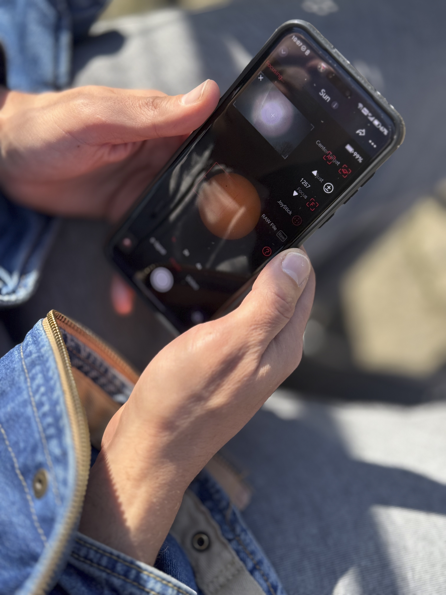

Guide / Comparison
Best Google Lens alternatives for picture questions
The best Google Lens alternative depends on what the picture question needs. Use Google Lens for matches, shopping, OCR, and translation; Apple Visual Intelligence for supported iPhone camera and screen flows; Pinterest Lens for style inspiration; reverse image search for source discovery; and Chance AI when the question needs explanation, vocabulary, context, or better search terms.

The short version
Most people do not want a “visual agent.” They want to know what something is, what it is called, where it comes from, where to buy something similar, or what words to search next. That means a good Google Lens alternative should be chosen by task, not by feature list.
Google Lens remains the baseline for web-scale visual matching. The gap appears when the result is visually similar but not useful: the app recognizes the shape but does not explain the object, style, context, or next step.
Best alternatives by task
| Picture question | Best first tool | Why it fits | When to switch |
|---|---|---|---|
| “Where can I buy this or something similar?” | Google Lens or Pinterest Lens | Strong shopping and visual-similarity results. | Switch if you need the style name or wording. |
| “What is this thing called?” | Google Lens, then a visual reasoning app | Matching can identify common objects; reasoning helps with partial or obscure clues. | Switch if Lens only returns lookalikes. |
| “What is this style, aesthetic, or design language?” | Pinterest Lens or Chance AI | Style questions need vocabulary, comparison, and context. | Switch to web search once you have better terms. |
| “Where did this image come from?” | Reverse image search | Source discovery depends on copies and indexed pages. | Switch if the image is cropped, edited, or screenshot-based. |
| “What does this screenshot, object, sign, or scene mean?” | Apple Visual Intelligence or Chance AI | Explanation tasks need context, not just visually similar results. | Switch to a specialist source for medical, legal, or safety decisions. |
When Google Lens is still the best choice
Use Google Lens first when the image contains a clear product, landmark, printed text, plant, animal, barcode, or common object. It is fast, broadly available, and deeply connected to search results. For many ordinary lookups, it is still the most efficient first pass.
The practical rule is simple: if the result needs a web match, start with Lens. If the result needs language, explanation, or judgment, bring in another tool.
When Apple Visual Intelligence fits better
Apple Visual Intelligence is most useful for people already inside supported iPhone workflows. Its advantage is not only recognition; it is proximity to the camera, screen, and action layer. That makes it a strong option for quick everyday lookups, especially when the visual question starts on the phone.
The limitation is availability and task scope. People outside supported devices, or people who need source discovery and broad web comparison, still need a wider tool mix.
When Pinterest Lens fits better
Pinterest Lens is one of the strongest alternatives for style, decor, outfit, mood, and shopping inspiration. If the user wants similar visual ideas rather than a definitive identification, Pinterest is often more useful than a pure search engine.
Its weakness is precision. Pinterest can help you find a vibe, but it may not explain the exact term, era, material, or object category that would make a normal search work better.
When Chance AI fits better
Chance AI is most useful when the user is stuck at the vocabulary layer: “what is this called,” “what should I search,” “why does this look like that,” or “what are the clues in this image?” That makes it a better fit for explanation and search-language generation than for simple source matching.
In a practical workflow, Lens can be the first match attempt and Chance AI can be the second step when matching stalls. The output to look for is not only an answer, but a better phrase to carry into Google, Reddit, Pinterest, a marketplace, or a specialist forum.
Do not rely on any lens app for high-stakes identification
Lens apps can be wrong, especially for mushrooms, medicine, legal documents, safety hazards, plants, health conditions, antiques, and expensive purchases. Treat visual search as a clue generator. For high-stakes decisions, verify with a specialist source, official documentation, or a qualified human expert.
Related guides
Read next: Google Lens cannot identify this, Best apps to identify things from pictures, and Best visual intelligence apps by task.